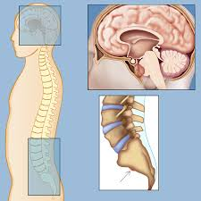

What is a Chordoma Tumor?
Sarcomas is the group of malignant bone and soft tissue tumors. Chordoma is a part of this group, accounting for 3% of all bone tumors and 20% of primary spinal tumors. A chordoma usually grows slowly and without symptoms, meaning it could be years before doctor's find it. Chordomas are often near the brainstem, the spinal cord, important nerves, and important arteries of the body. Because of this location, chordoma is complicated to treat. Chordoma's often come back or reocur, and metastasizes in 30% - 40% of patients.
30% of Chordomas form in the skull base, an area at the base of brain. 50% form in the bones at the bottom of the spine, called the sacrum. The other 20% form in the mobile spine area. The following are the different types of Chordoma Tumors
- Conventional
- Most common form of Chordoma
- Slow-growing
- "Bubbly" appearance
- Shows the brachyury protein
- Dedifferentiated
- Very rare
- More aggressive, faster-growing, and more likely to metastasize
- Poorly Differentiated
- Extremely rare, new type
- More common in younger patients
- deletion of gene SMARCB1 or INI1
- More aggressive, faster-growing, and more likely to metastasize
Who is Affected by Chordoma?
Chordomas are diagnosed in 1 out of every 1,000,000 people each year. This means only about 300 people in the United States adn 700 people in Europe. Chordoma tumors are more common for those in their 50s to 60s, but anyone can have one.
How do you Treat a Chordoma Tumor?
The prognosis for each person is unique. It depends on factors such as age, type of chordoma, size and location of the tumor and more. Chordomas can be treated though chemotherapy, medicines, and resection procedures. Much research is being done to better find cures for Chordoma.
Irrelevant Tableau Graph (For Project Purposes)